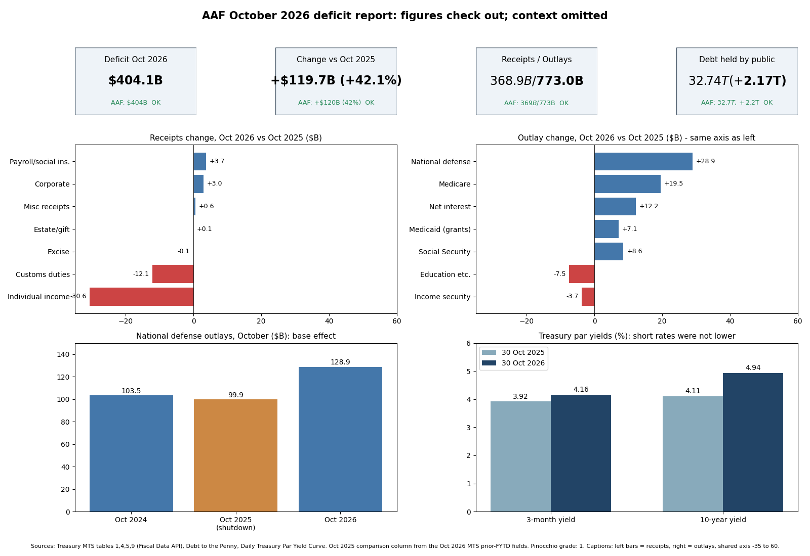

The piece is accurate on its figures: 17 of 19 checkable claims match Treasury data to rounding. Grade: 1 Pinocchio on the 0-4 scale (accurate numbers, some context missing). The October 2026 deficit was $404.1B, $119.7B (42.1%) above October 2025; receipts were $368.9B (-8.8%) and outlays $773.0B (+12.2%). Debt held by the public was $32.74T, +$2.17T year on year.
| Claim | Primary-source value | Verdict | Confidence |
|---|---|---|---|
| October 2026 deficit $404B | MTS Table 1: $404.06B | Verified | High |
| $120B (42%) above Oct 2025 | $404.06B - $284.33B = $119.73B (+42.1%) | Verified | High |
| Spending $773B; revenue $369B | MTS: outlays $773.00B; receipts $368.94B | Verified | High |
| Revenue down $35B (9%) | -$35.43B (-8.8%) | Verified | High |
| Individual income tax down $31B (14%) | $186.38B vs $216.95B: -$30.57B (-14.1%) | Verified | High |
| Customs down $12B (39%) | $19.22B vs $31.35B: -$12.13B (-38.7%). Gross fell $7.1B; refunds rose $5.0B ($1.7B to $6.7B) | Verified; refund role supported | High |
| Payroll and corporate taxes rose | Social insurance +$3.7B (+2.9%); corporate +$3.0B (+19.7%) | Verified | High |
| Outlays up $84B (12%) | +$84.3B (+12.2%) | Verified | High |
| Defense +$29B (29%) | $128.88B vs $99.94B (+$28.9B, +29.0%) | Verified, but Oct 2025 base depressed by shutdown (Oct 2024: $103.5B) | High on number |
| Medicare +$19B (13%) | $170.05B vs $150.56B (+$19.5B, +12.9%) | Verified | High |
| Social Security +$9B (6%) | +$8.55B (+6.4%) | Verified | High |
| Medicaid +$7B (13%) | Grants to States for Medicaid $62.91B vs $55.78B (+$7.13B, +12.8%) | Verified | High |
| Other programmatic +$9B (67%) | No MTS category reproduces it (base would be about $13B) | Not checkable here (category undefined) | Low |
| Income security -$4B (6%) | -$3.69B (-5.9%) | Number verified. OBBBA attribution not verified: SNAP (FNS) fell only $1.3B | Medium |
| Net interest +$12B (13%) | $103.08B vs $90.87B (+$12.2B, +13.4%) | Verified | High |
| Net interest 4th largest, behind Medicare, SS, defense | MTS functions: Medicare 170.1, SS 142.7, defense 128.9, net interest 103.1; Health 93.5 | Verified (by function) | High |
| Higher long-term rates; lower short-term rates | 10y par yield 4.94% vs 4.11%; 3m 4.16% vs 3.92%; avg rate on bills 4.014% vs 4.075% | Long-term true. Short-term 'lower' only true of average rate on outstanding bills (-6bp); market yields rose | Medium |
| Debt held by public $32.7T, up $2.2T from $30.6T | Debt to the Penny: $32.738T (30 Oct 2026) vs $30.571T (31 Oct 2025): +$2.17T | Verified | High |
| IEEPA ruled illegal by Supreme Court; refunds issued | Learning Resources v. Trump, 20 Feb 2026 (SCOTUSblog, law firm summaries); MTS customs refunds up | Verified | Medium-High |
| Debt unsustainable / projected to rise | Opinion and projection (CBO); not a factual figure | Opinion; consistent with CBO | Medium |
Answer: All verified. Key values: Oct 2026 deficit $404.06B; receipts $368.94B; outlays $773.00B. Sources: MTS tables 1, 4, 5, 9. Confidence: high, official data.
Answer: Net interest +$12.2B (+13.4%) verified; debt verified; short-term rate characterisation partly wrong. Key values: debt $32.738T vs $30.571T; yields above. Sources: Debt to the Penny; Daily Treasury Par Yield Curve; Average Interest Rates. Confidence: high on debt, medium on rate wording.
Answer: Year-over-year percentages are measured against a shutdown-affected October 2025. Defense, Agriculture ($4.8B to $17.6B) and general government spending partly reflect catch-up and base effects. Confidence: medium (the shutdown effect is inferred from the comparison with Oct 2024, not measured by Treasury).